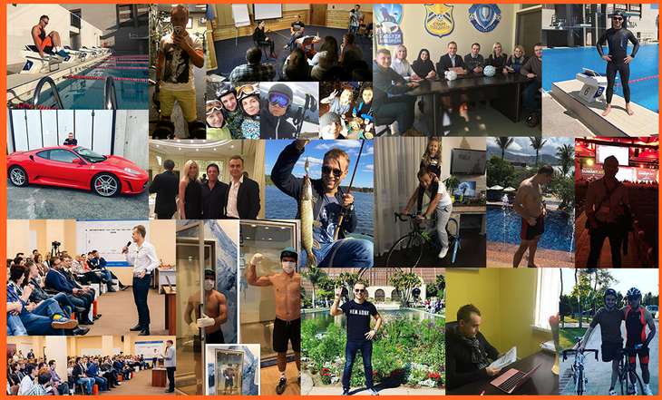

GOLD COACH
БЕСПЛАТНЫЙ ВЕБИНАР
10 ШАГОВ К СОЗДАНИЮ «САМОРАЗВИВАЮЩЕЙСЯ КОМПАНИИ» (ВКЛЮЧАЯ СВОБОДУ, КАК УПРАВЛЯТЬ 3 КОМПАНИЯМИ И ПРОЙТИ IRONMAN)
|
Спикер
|
|
|
ДО СТАРТА ТРАНСЛЯЦИИ ОСТАЛОСЬ...
______дней_________часов________минут_______секунд
ВОТ ВСЕГО ЛИШЬ МАЛАЯ ЧАСТЬ ИЗ ТОГО, ЧТО ТЫ УЗНАЕШЬ НА ВЕБИНАРЕ Простая 10 шаговая система для дизайна «Саморазвивающейся Компании» в 2017 году Как решить проблему людей №1 и масштабировать бизнес в 10 раз Какие 4 пункта плана внедрить за следующие 6 месяцев, чтобы освободить 80% вашего времени 2 простых и легких для внедрения «фишки», которые радикально поднимут эффктивность компании 3 фундаментальные причины, почему Ваш бизнес никогда не масштабируется на свой 100% потенциал прибыли Вы или Вас: как перестать быть жертвой подчиненных и начать профессионально управлять людьми< 3 тактики, которые превратят кризисную компанию в устойчивую и прибыльную в 2017 году Формула как построить здоровую и умную компанию на долгие годы, чтобы и внуки вами гордились
|
|
Наконец-то, раскрыта технология как предпринимателю управлять прибыльным бизнесом (и даже не одним), при этом оставаясь свободным, здоровым и довольным жизнью, без стресса и необходимости жить на работе!
Представьте, как Вы с удовольствием просыпаетесь утром и с самых первых минут дня точно знаете, что нужно делать сегодня, чиобы сделать ваш бизнес еще более прибыльным... За утренним кофе Вы смотрите статистику по продажам и с чувством гордости видите, что по сравнению с прошлым месяцем она выросла значительно, так как Вы внедрили новые системы в продажах и маркетинге... Вы с нетерпением ждете встречи с Вашей командой, чтобы обсудить новые способы давать большие ценности вашим клиентам и мотивировать их возвращаться к вам чаще и чаще. При этом вы знаете, что уже в 4 часа дня будете сврбодны, чтобы заняться спортом, а потом провести вечер с семьей... А в следующем месяце у Вас запланирован отпуск в теплой стране, о которой вы так давно мечтали... Не так давно вы бы провели этот день (и многие следующие) в стрессе, «тушении пожаров», работая слишком долго и слишком упорно, почти без поддержки, реагируя на проблемы, вместо того, чтобы создавать успех. Вы улыбаетесь, понимая, как далеко вы продвинулись и как много побед впереди... Приветствую, меня зовут Иван Зимбицкий и в начале карьеры предпринимателя я тоже работал по 12-18 часов в день, как и вы, возможно, сейчас... Однако я общался с многими западными предпринимателями и видел, что они успешнее меня и при этом свободны и наслаждаются жизнью, а их бизнес растет... Чтобы раскрыть их секрет я инвестировал в обучение у наставников из США более $15 000. И мне удалось «взломать» код технологии как создать «саморазвивающийся» бизнес, который дает деньги и свободу. Сейчас у меня 3 бизнеса. При этом я путешествую по 4 месяца в году, обучаюсь, провожу время с семьей, обучаю команду, провожу мероприятия на 100-150 человек, занимаюсь спортом каждый день и интенсивно готовлюсь к прохождению дистанции Ironman 70.3 (это 1,9 км плавания, 90 км на велосипеде и 21,1 км - бег). 
И я знаю, что это возможно и для вас... Приходите на мой вебинар и я раскрою вам свою технлогию в деталях. |